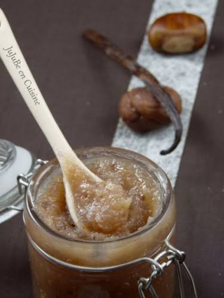

Confiture de chasselas


⟹ Desserts & Douceurs ⟸
La confiture de chasselas est la façon la plus gourmande de prolonger la saison du raisin le plus célèbre du Tarn-et-Garonne : le Chasselas de Moissac. Ce raisin blanc de table, doré et croquant, au goût de miel et de fleurs, fait la réputation des coteaux qui dominent la confluence du Tarn et de la Garonne.

Le chasselas est un cépage ancien, cultivé en France depuis des siècles et dont le nom est traditionnellement rapproché du village de Chasselas, en Saône-et-Loire. Dans le Bas-Quercy, les coteaux argilo-calcaires bien exposés autour de Moissac lui offrent des conditions idéales : chaleur estivale, automnes lumineux et sols qui favorisent la maturité et la finesse des grains.
C’est au XIXe siècle que le raisin de Moissac prend son essor commercial. L’arrivée du chemin de fer et du canal latéral à la Garonne permet d’expédier les grappes vers Paris et les grandes villes. Le chasselas devient alors une culture de rente pour des milliers de familles, et Moissac s’impose comme une capitale fruitière du Sud-Ouest.
La qualité de ce raisin est consacrée en 1971 : le Chasselas de Moissac devient le premier fruit frais en France à obtenir une Appellation d’origine contrôlée. La reconnaissance européenne en AOP suit en 1996. Le cahier des charges n’autorise que la variété chasselas blanc et encadre la conduite de la vigne, les rendements et le conditionnement.
Le chasselas est un fruit exigeant. Après la cueillette, chaque grappe passe entre les mains des « ciseleuses », qui retirent au ciseau les grains abîmés, trop petits ou mal colorés pour ne garder que des grappes parfaites. Ce travail minutieux produit des grains écartés, parfaitement sains mais impropres à la vente en grappes : ce sont eux qui, dans les fermes, finissaient traditionnellement en confitures, gelées ou raisiné.
La confiture de chasselas est donc d’abord une préparation domestique, liée à la fin des vendanges de table, de septembre à octobre. Les grains sont égrappés, souvent coupés en deux et épépinés à la main — un travail long, fait en famille —, puis cuits avec du sucre et un filet de citron pour compenser leur faible acidité. Certaines recettes ajoutent une gousse de vanille, un bâton de cannelle ou une pomme pour la tenue.
Le raisin occupe aussi une place à part dans l’histoire de Moissac : dans les années 1930, la ville aménage un Uvarium, pavillon de style Art déco au bord du Tarn où l’on venait faire la « cure uvale », en dégustant chasselas et jus de raisin pour leurs vertus supposées. Le bâtiment est aujourd’hui un symbole du patrimoine moissagais.
Aujourd’hui, le Chasselas de Moissac AOP est cultivé par environ 230 producteurs sur près de 465 hectares répartis sur 76 communes du Tarn-et-Garonne et du Lot. Sa culture a été inscrite à l’Inventaire national du patrimoine culturel immatériel, et Moissac est labellisée Site remarquable du goût.
La confiture, elle, n’est pas couverte par l’appellation : c’est une transformation artisanale, proposée par les chasselatiers en vente directe, les confituriers et les épiceries fines de la région. Sa robe dorée, sa douceur miellée et son parfum délicat en font une compagne idéale du foie gras, des fromages de chèvre et de brebis ou, tout simplement, d’une tartine de pain de campagne.
Gelée de chasselas : le jus seul, filtré puis cuit avec du sucre, donne une gelée translucide très fine.
Chasselas aux noix du Quercy : quelques cerneaux concassés ajoutés en fin de cuisson apportent du croquant, idéal avec les fromages.
Raisiné : préparation ancienne sans sucre ajouté, obtenue par longue réduction du jus de raisin, parfois avec des poires ou des coings.
Chasselas-pomme-cannelle : version d’automne, plus épicée, qui profite des pommes du Tarn-et-Garonne.
La confiture de chasselas se trouve surtout dans le pays de Moissac, au plus près des vignes, de la fin de l’été jusqu’aux fêtes de fin d’année.
Moissac capitale du chasselas, avec son marché, sa maison du Chasselas place de l’Uvarium et ses boutiques de produits du terroir.
Exploitations chasselatières nombreuses fermes des coteaux du Bas-Quercy proposent visite, dégustation et vente directe de raisin et de confitures.
Lauzerte et le Pays de Serres villages perchés au cœur de l’aire AOP, où les marchés font la part belle aux produits du verger.
Montauban marchés et épiceries fines de la préfecture, qui mettent en avant les productions du département.